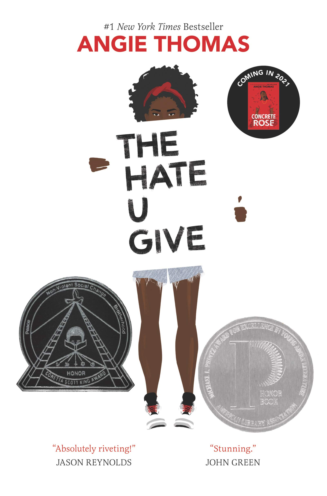
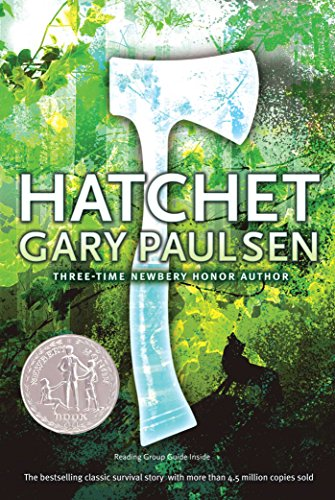
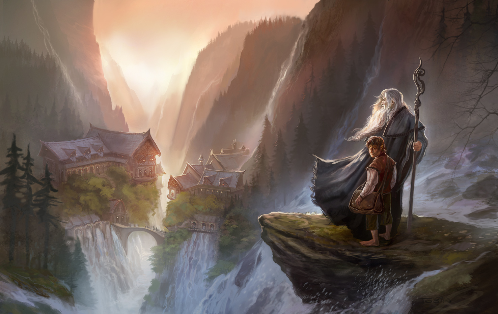
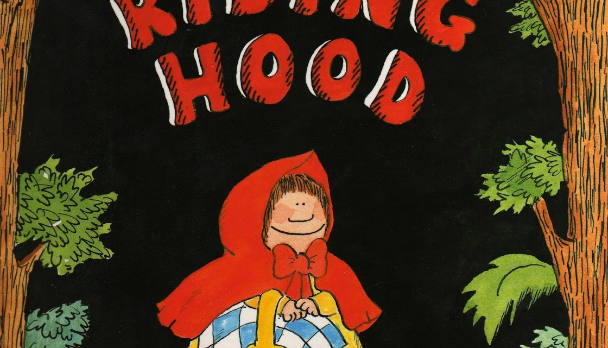
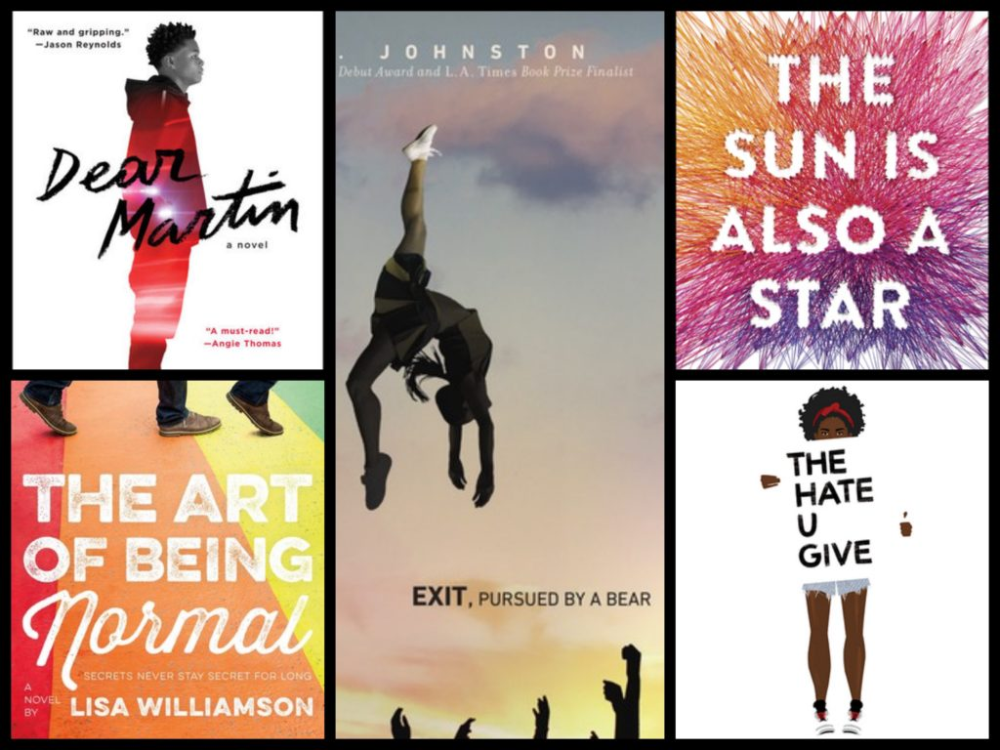
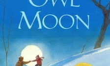

Genres
There is an enormous variety of genres out there, and the key is to find which ones you love the most. This largely corresponds with your personal interests, but there can be different genres within an interest area. For example, if you are very interested in sports, you could read a fictional story about fictional characters or a story about a real-life athlete. Genres and interests are closely tied, but sometimes they don't individually correspond.
Examples
If you have interests in any of these areas, here are some genres that may correspond with them (and some books!):
Love mythology? Fantasy could be the right genre for you. Anything goes in fantasy; talking animals, powerful creatures, superpowers, you name it. An example could be the Harry Potter series by J.K Rowling. You may also like dystopian fiction.

Are you sociable, or do you enjoy talking to your friends and hearing their personal stories? You might like realistic fiction, like The Hate U Give by Angie Thomas. Realistic fiction describes any book which has a story that could potentially happen, but most likely hasn't. You may also enjoy young adult fiction.
Are you adventurous? Do you like going camping or venturing the woods? You might like adventure fiction books, such as Hatchet by Gary Paulsen. Adventure books are full of suspense and, well, adventure. They'll be a rollercoaster of action. You may enjoy dystopian fiction books as well, something like The Maze Runner series by James Dashner.
Some genres:
- Classic Fiction
- Epic (also sometimes known as epic fantasy)
- Folktale
- Historical Fiction
- Realistic Fiction
- Romance
- Science Fiction
- Personal Narrative
Classical Fiction
Epic
Folktale
Historical Fiction
Realistic Fiction
Romance
Science Fiction
Personal Narrative